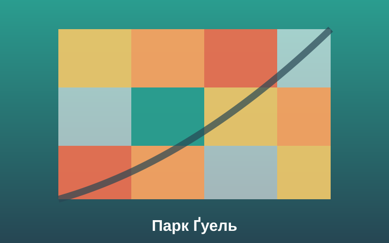
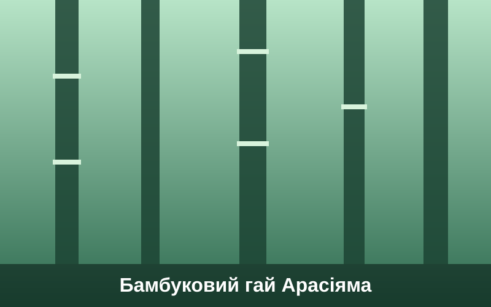
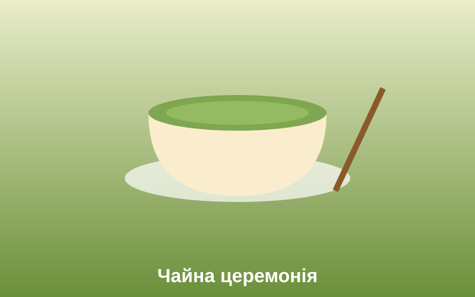

Наші найкращі кадри
-

🇪🇸 Шпилі собору видно майже з будь-якої точки міста — як компас для заблукалих. -

Цікавий факт: мозаїку з битої кераміки склав архітектор Жужеп Марія Жужол. -

Перший вечір: замовили все меню, а офіціант лише всміхнувся. -

🇯🇵 Кожна брама — подарунок від людини чи компанії, на ній викарувано ім'я дарувальника. -

Бамбук росте до метра на добу, тож гай змінюється навіть за час прогулянки. -

Чайна пінка має бути такою легкою, щоб ложка не лишала сліду. -

🇳🇱 Будинки злегка нахилені вперед, щоб піднімати меблі на мотузках. -

У місті велосипедів більше, ніж мешканців. -

Молодий сир солодкуватий, а витриманий — із хрусткими кристалами.